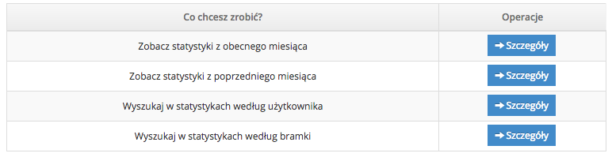
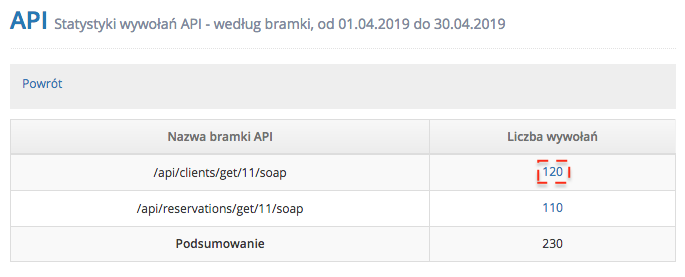
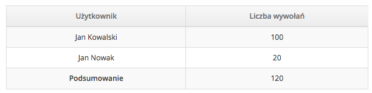
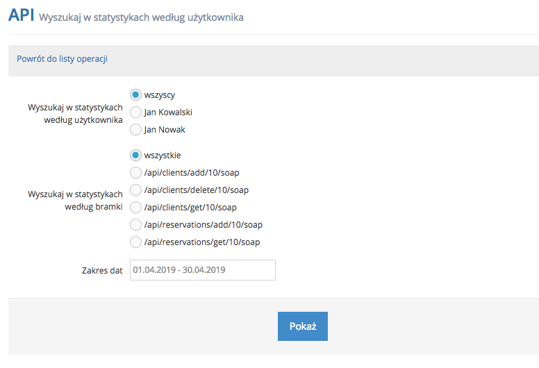
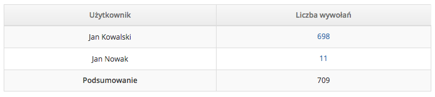

Dostępne w panelu IdoBooking Statystyki API to bardzo przydatny zestaw informacji, dzięki którym możesz dowiedzieć się ze szczegółowych raportów, jak często i które wywoływane są bramki w API.
Do wykorzystania masz raporty:
- z obecnego miesiąca
- z poprzedniego miesiąca
- z możliwością wyszukiwania zapytań i odpowiedzi według użytkownika
- z możliwością wyszukiwania zapytań i odpowiedzi według bramki

W przypadku analizy statystyk API z obecnego miesiąca i poprzedniego miesiąca dostaniesz raport z wywoływanymi bramkami i ich ilością wywołań:

Jeśli natomiast chciałbyś zobaczyć którzy użytkownicy wykonywali zapytania, to wystarczy że klikniesz w link z ilością wywołań:

W przypadku statystyk API wyszukiwanych według użytkownika i bramki, wybierz którego użytkownika i bramkę chcesz analizować a także wybierz zakres dat, które Cię interesują:

Następnie w przypadku wyszukiwania według użytkownika, zobaczysz którzy użytkownicy ile razy wywoływali bramki:

a w przypadku wyszukiwania według bramki, zobaczysz ilość wywołań konkretnej bramki: